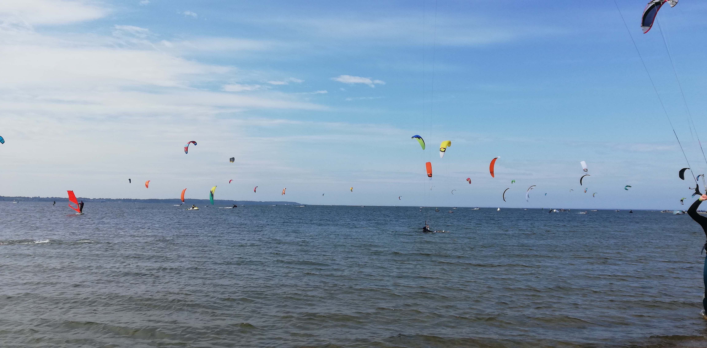

Podróże
Bardzo lubię podróżować.Najczęściej wybieram się na wycieczki latem, w wakacje, gdy mam dużo wolnego czasu.
Przedstawię tutaj kilka moich ostatnich wycieczek, na których byłam, a są to między innymi:
- Góry
- Morze
- Mazury
- Kielce
Góry
Uwielbiam wycieczki w góry, są tam wspaniałe widoki, na które mogę patrzeć godzinami.Wybieram się zazwyczaj na wycieczki w góry z rodziną i miło spędzamy wspólnie czas.
Cele, które już osiągnęliśmy to przede wszystkim: Kasprowy Wierch, Giewont, Morskie Oko, Czarny Staw, Sarnia Skała i Dolina Pięciu Stawów.
Oto kilka moich zdjęc z tych wypraw:


Morze
Nad morze lubię jeździć, ponieważ lubię leżeć na plaży i się opalać.Mogę dzięki temu miło spędzić czas na rozmowach lub czasami na czytaniu książek.
Na plaży lubię także spacerować i podziwiać piękno natury, co sprawia mi ogromną przyjemność.
Tutaj taże przedstawię kilka zdjęć z wyjazdów:

Mazury
Mazury to piękne miejsce.Można odpocząć i przyjemnie spędzić swój czas nad wodą w spokojnej atmosferze.
Moje zdjęcia z wycieczki:
Kielce
Kielce były moją ostatnią wycieczką, na której ostatnio byłam.Jest to piękne miasto, które warto odwiedzić.
Czeka tam na nas wiele atrakcji i miejsc do zwiedzenia.